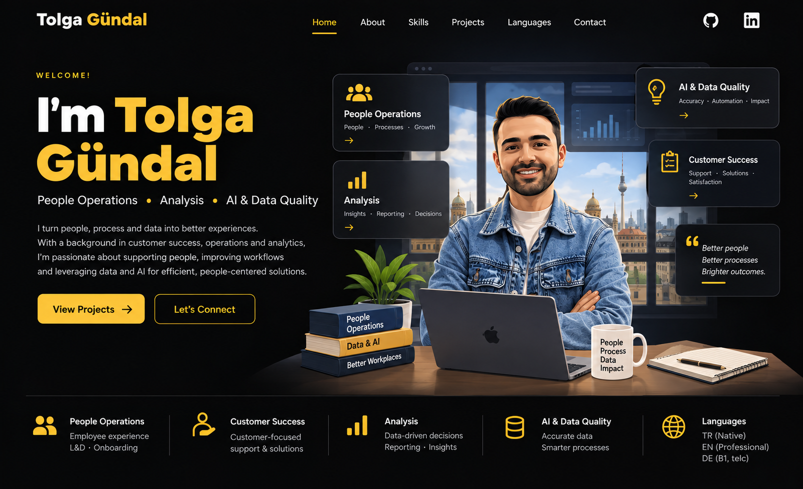

01 / PEOPLE
People Operations
People-first operational support across onboarding, employee processes, learning, employee data and day-to-day People activities.

People-first operational support across onboarding, employee processes, learning, employee data and day-to-day People activities.
Customer-focused support, request management, issue resolution and cross-functional coordination.
Connecting people, systems and processes to improve execution, accuracy and stakeholder support.
Onboarding, employee support, learning processes, employee data and operational coordination.
Structured analysis, reporting, insights and data-driven decision support.
Accurate data, practical automation and AI-assisted approaches to improve workflows.
B1 — telc Certificate
Professional working proficiency
Native
Analytics work turning operational and customer data into useful insights.
View GitHubWork around data accuracy, operational requests, stakeholder support and process reliability.
View GitHubSQL, analytics and academic projects demonstrating structured problem solving.
View GitHub